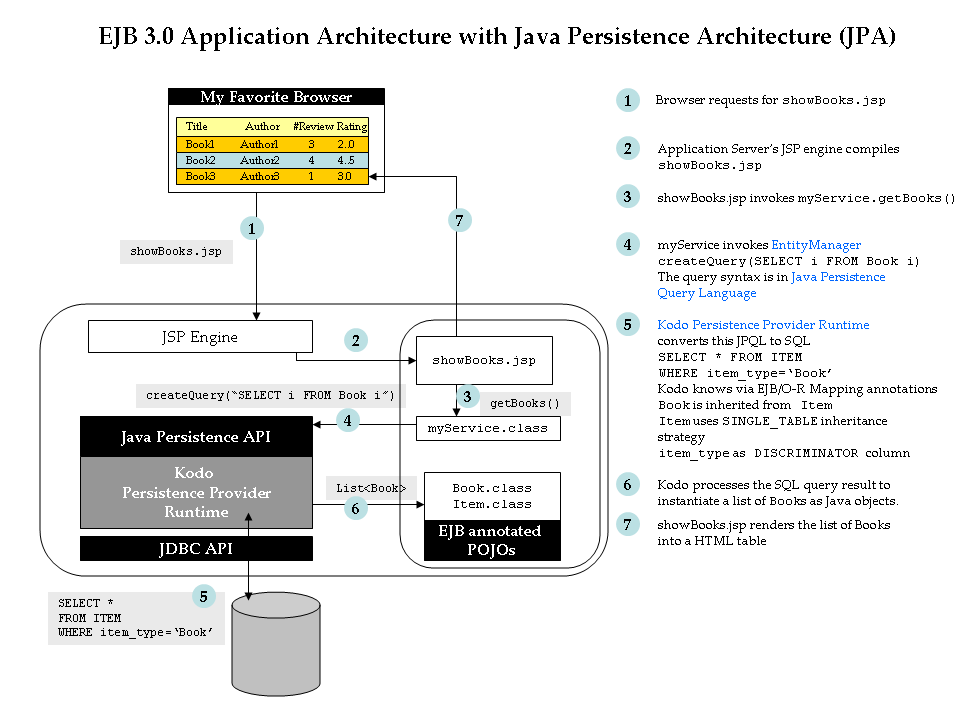

EJB3 Sample Application |
||||||
| Home | JPA | Session Bean | Message Driven Bean | EJB3+AJAX | See code/resources | |

The samples are based on a Plain, Old Java Object (POJO) based
Persistent EJB Domain Model
Run the examples |
|
|---|---|
| Obtain a EntityManager and open a transaction with the database. | Run |
| Perform a unqualified query to fetch all books from the database. | Run |
| Perform a query to fetch selected music from the database. | Run |
| Create a new instance of an Artist in the database. | |
| Create a new Review that is related to a Book and a Reviewer. Demonstrates how instance graph is persisted maintaining relationship integrity | |